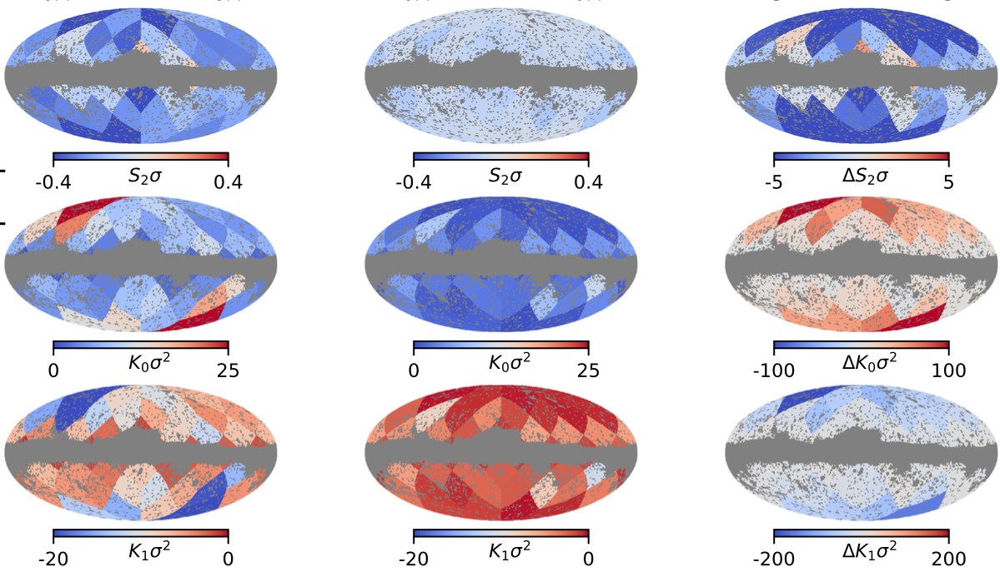
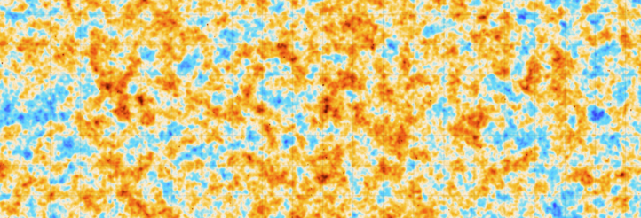
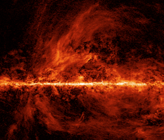
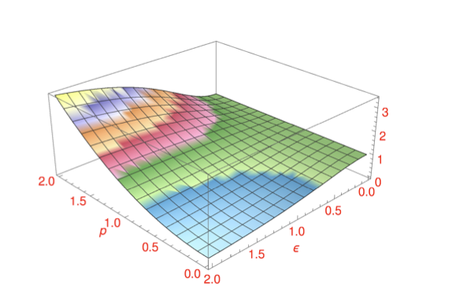

Research
My research focuses on understanding and mitigating astrophysical foregrounds for precision measurements of the Cosmic Microwave Background (CMB). I study the statistical, morphological, and physical properties of Galactic emission, with particular emphasis on non-Gaussianity, the magnetized interstellar medium, and the connection between observations and MHD simulations. I also work on CMB mapmaking and component-separation methods in the context of Simons Observatory, with the broader goal of understanding how foreground complexity and observational systematics propagate into cosmological measurements.

Non-Gaussianity of Galactic Foregrounds
Galactic dust and synchrotron emission exhibit strong non-Gaussian structure across a wide range of angular scales. I study their statistical and morphological properties using higher-order statistics and Minkowski functionals. A major focus of my work is understanding how this non-Gaussianity evolves across angular scales, what it reveals about the underlying astrophysical structure, and its implications for foreground modeling and CMB analysis.

CMB Mapmaking and Foreground Separation
Within the Simons Observatory, I work on both component separation and CMB mapmaking. I am developing component-separation methods to recover Galactic thermal dust and other foreground components from multifrequency observations, with the goal of improving their characterization and mitigating their impact on CMB measurements. I also work on maximum-likelihood mapmaking for the Small Aperture Telescopes (SATs), focusing on the reconstruction and characterization of CMB polarization maps from time-ordered data.

Dust Filamentary Structure & MHD Turbulence
The interstellar medium exhibits rich filamentary structure shaped by turbulence and the Galactic magnetic field. I study the morphology and orientation of these structures in observations and use MHD simulations to investigate the physical origin of the non-Gaussian statistics seen in Galactic dust emission. I am also working on using these connections to improve filament-based models of polarized dust emission for CMB foreground simulations.

Statistical Morphology of Random Fields
I am broadly interested in statistical methods for characterizing complex random fields beyond their power spectra. My work explores higher-order statistics and Minkowski functionals, as well as emerging approaches such as scattering transforms, to quantify non-Gaussianity, morphology, and scale-dependent structure in astrophysical fields. I am particularly interested in developing these tools for applications to CMB foregrounds and the turbulent interstellar medium.